What Every Nerd Should Know About Mechanical Watches
The figures are the talk's slides, live.
Mechanical watches have kept time for 500 years. Many of their core parts were invented even earlier for giant cathedral tower clocks before being shrunk into portable timepieces. This page explains how a modern one works. I personally think it’s fascinating that a purely mechanical device can keep time with 99.99% accuracy for $100. They also changed the world and look good on your wrist.
This presentation was partially inspired by Bartosz Ciechanowski’s Mechanical Watch page. You can think of this page as a simpler introduction or background. When you’re finished with this, that page gives more depth.
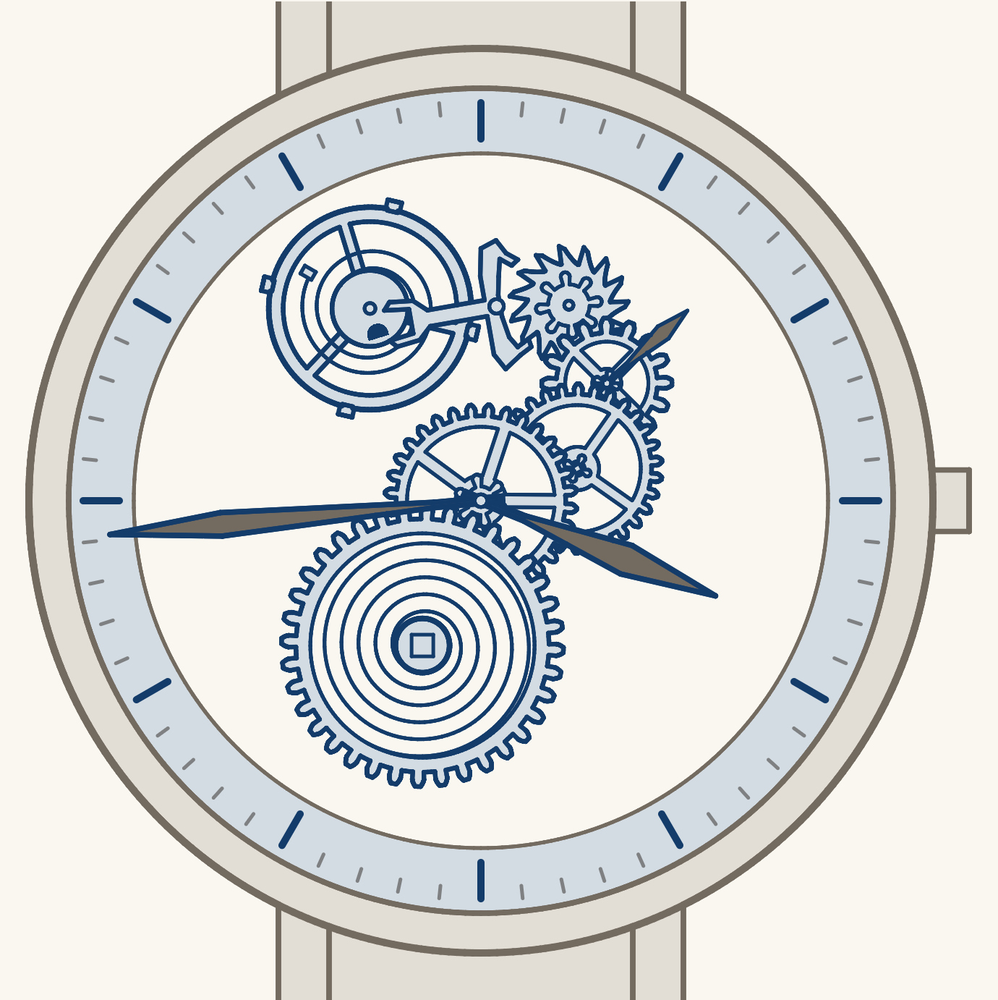
PART 1 Mechanical Marvels
Hairspring
c. 1675
Start with the part that keeps time. In 1675 Christiaan Huygens, a Dutch scientist, invented the hairspring. It is a flat spiral of steel ribbon, finer than a hair. Its outer end is held still, and its inner end is free to turn. Twist the inner end and let go, and the spiral winds and unwinds, back and forth, at a steady rate. In this drawing it swings once every two seconds, and the rest of the watch follows that beat.
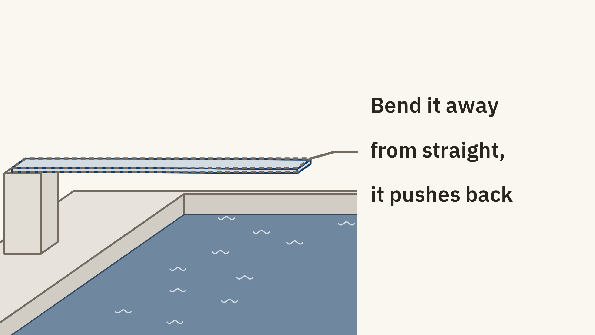
Why does a spring swing? Think of a diving board. Bend it down, and it pushes back: an elastic restoring force. Let go, and it does not stop at straight. It overshoots, bends the other way, and comes back again: it oscillates. With no friction, it would oscillate forever.
A hairspring is a diving board rolled up. The board’s rest shape is a straight line; the hairspring’s is a spiral. Take hold of the slider under the next picture, and drag it to the right.
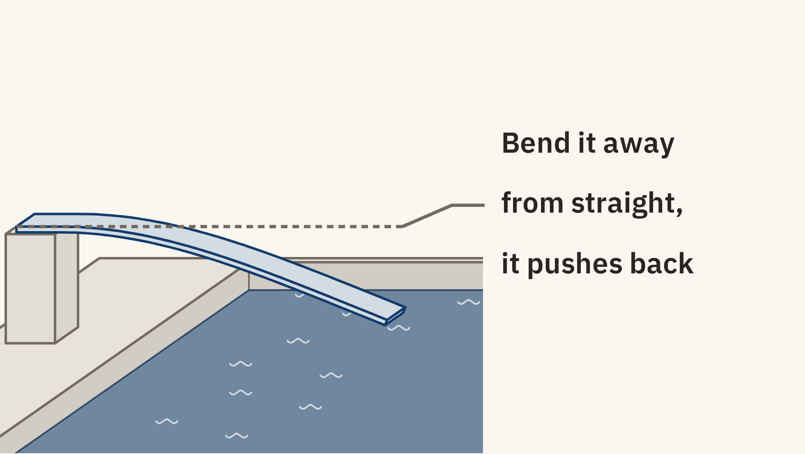
“Bend” becomes “wind”, and “straight” becomes “rest”. Now give the hairspring a twist: drag the slider to wind the spiral away from its rest shape, and let go.
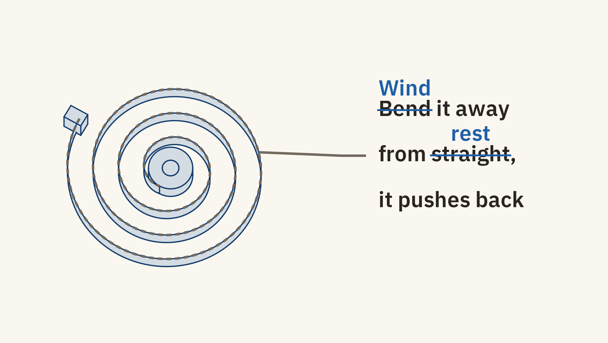
It pushes back. It overshoots and swings, just as the board did. This one move is the whole idea of the hairspring.
Balance Wheel
c. 1364
The hairspring is only half of the timekeeper. The other half is the balance wheel. While most of its mass is around the outside, it is actually fixed to the spring’s inner end. The spring provides the restoring force. The wheel provides the mass and inertia.
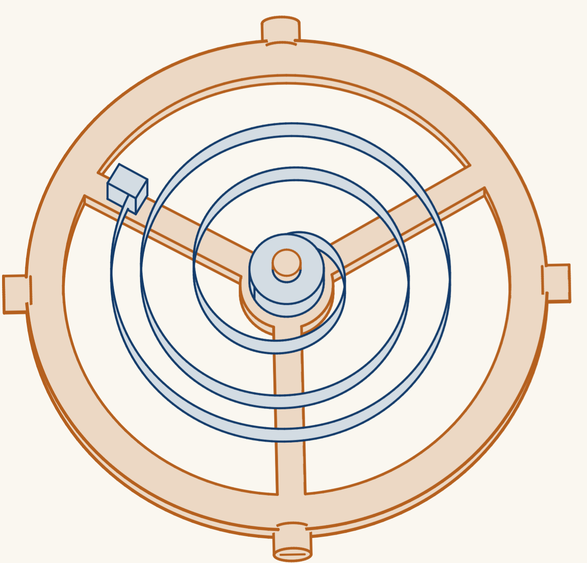
A hairspring alone would oscillate far too fast to count. The wheel slows it to a pace that the gears can count.
Mass also makes the swing steady. Push an empty playground swing, and it jerks about. Put a child on it and it swings much more gracefully. A heavy wheel carries its own momentum, so a knock to your wrist, or turning it upside down, barely changes its rhythm.
How good is it? A well-calibrated mechanical watch, even an everyday Seiko or Citizen, is about 99.99% accurate. A day has 86,400 seconds, so a good watch gains or loses about nine seconds a day.
I’m not particularly handy with mechanical things. If I tried to build a table it would wobble because things would be off by a few percent. So it kind of blows my mind that, for $100, I can get a simple, everyday, purely mechanical system and tweak it to be 99.99% accurate!
Escapement
Verge escapement: c. 1275; Lever escapement: c. 1755
A second hand that just moves back and forth isn’t very useful. We need it to turn one way only. The escapement turns the swing into steps.
The escape wheel is being turned by a mechanism we’ll explain soon, so it’s hidden on this diagram. Without something to stop it, it would just turn and turn.
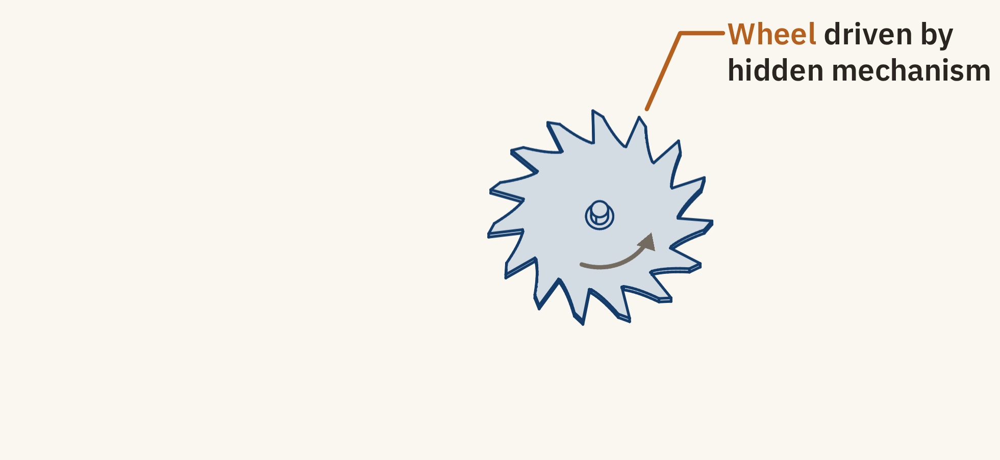
The pallet fork stops it.
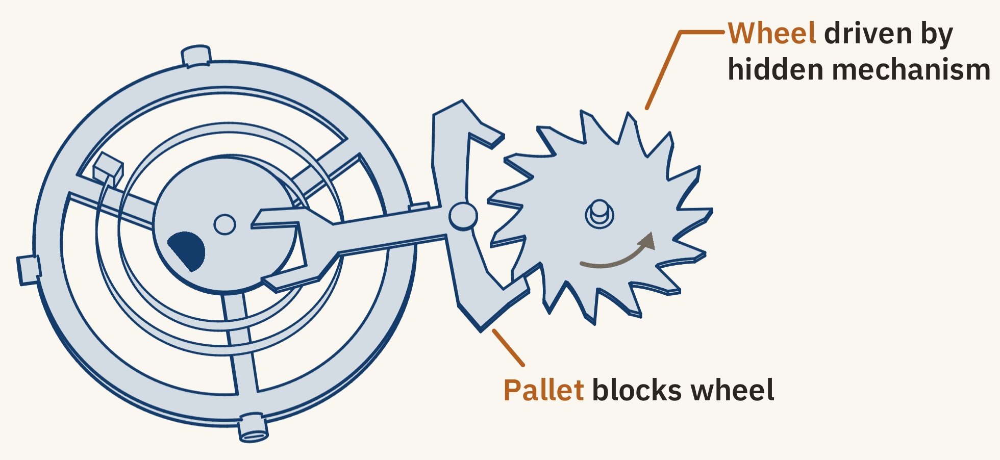
Its two prongs (called stones) stick in the wheel’s teeth: a tooth lands on a stone, and the wheel stops. Each time the fork rocks, one stone lets a tooth go, and the other stone catches the next tooth. The tooth escapes, and that is where the name comes from.
What rocks the fork? The balance does. On its staff is a small impulse jewel, which sits in the notch at the end of the fork. It’s actually a synthetic ruby or sapphire, so it really is a jewel, a precious stone.
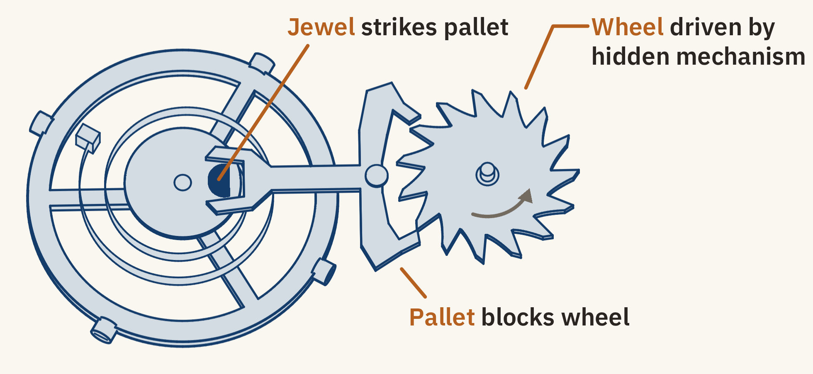
As the balance swings through the middle, the jewel strikes the fork and flips it one way. On the swing back, it flips it the other way.
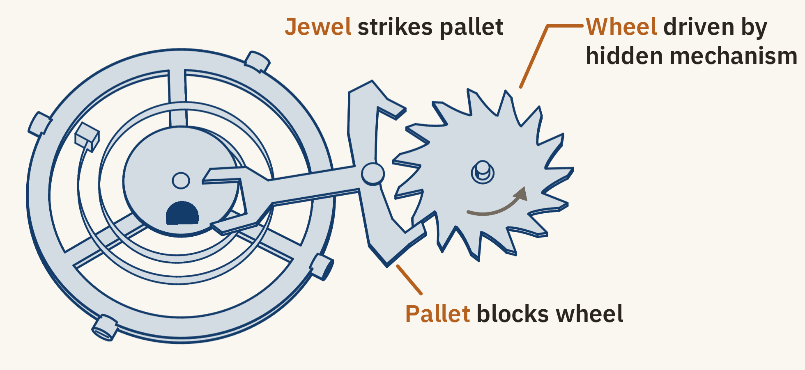
So, at each swing, the balance lets the wheel take one small step. The step ends when the next tooth lands on a stone, hard enough to make a sound, this is the tick and the tock of a watch.
Ticks and Turns
Before we go on, something that trips people up until they think it through. How long does the second hand take to go once around the dial?
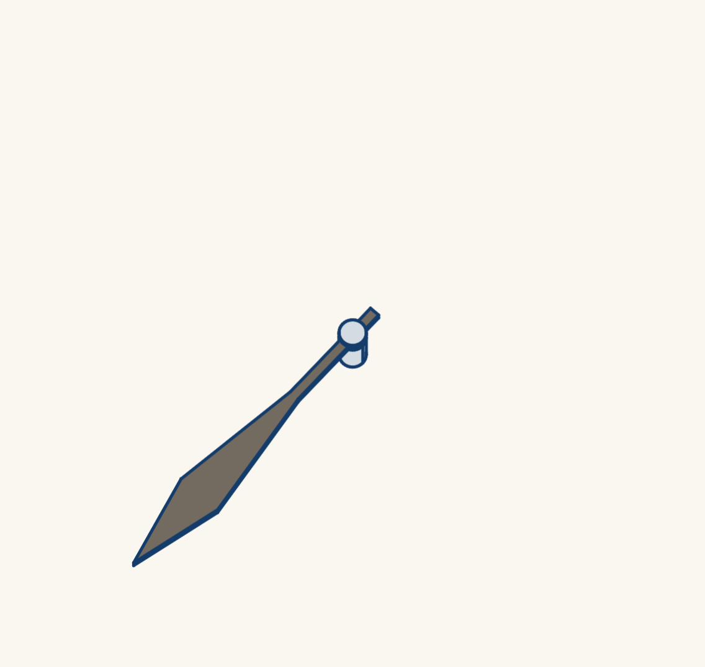
Each tick is one second, and sixty ticks brings it all the way around. So the second hand makes a complete circle once a minute. A hand is named for what it counts, not for how long it takes to make a full 360° turn.
| Hand | A full turn |
|---|---|
| Second hand | Once a minute |
| Minute hand | Once an hour |
| Hour hand | Twice a day |
Gears
Second hand: c. 1670
The escapement gets the escape wheel turning at a precise rate. But the second hand must turn once a minute, and the escape wheel turns faster than that. To convert a faster rotation into a slower one, a watch uses gears: a small gear that meshes with a big one.
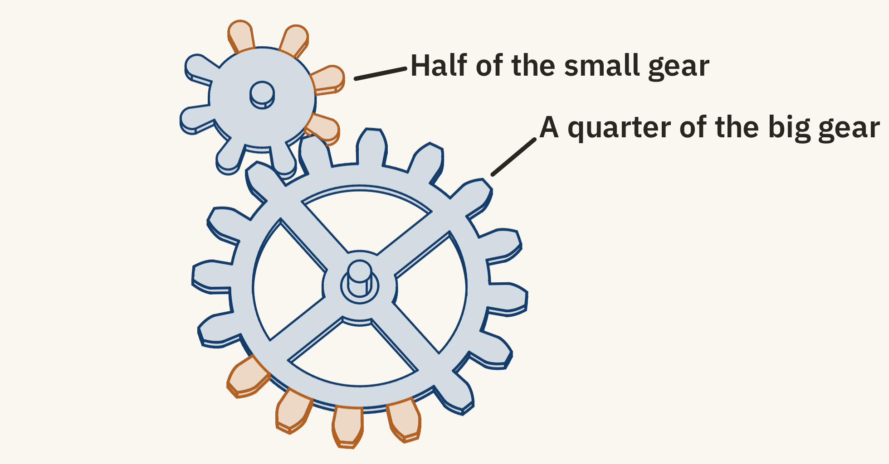
The teeth on the two gears must have the same spacing, so they mesh neatly. Each tooth fits in a gap of the other gear, so the teeth go past each other one for one, and both rims move at the same speed. Four teeth on each gear are colored. Those four teeth are half of the small gear, but only a quarter of the big one. So the small gear turns twice for each turn of the big one: twice the circumference, half the speed.
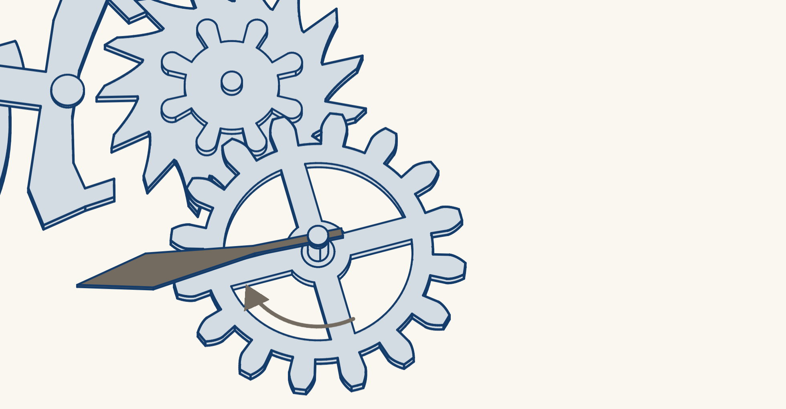
Now attach the smaller gear (called a pinion) to the escape wheel. The gears do not spin freely any more: they move on one tick at a time, with the escape wheel. The escapement controls the speed of the whole train of gears.
The big gear pushing the small gear (pinion) is the force turning the escape wheel. What turns the big wheel? That’s a mechanism we’ll explain soon.
In this watch, the big gear (called the fourth wheel) turns exactly once a minute: just what the second hand needs! So the second hand goes on the big gear’s axle. It is the first part of the watch that we can read.
Gear Train
Minute hand: c. 1656
The second hand turns once a minute. The minute hand must turn once an hour: sixty times slower. So we could try the same trick, and have a gear that’s 60 times bigger than the small gear.
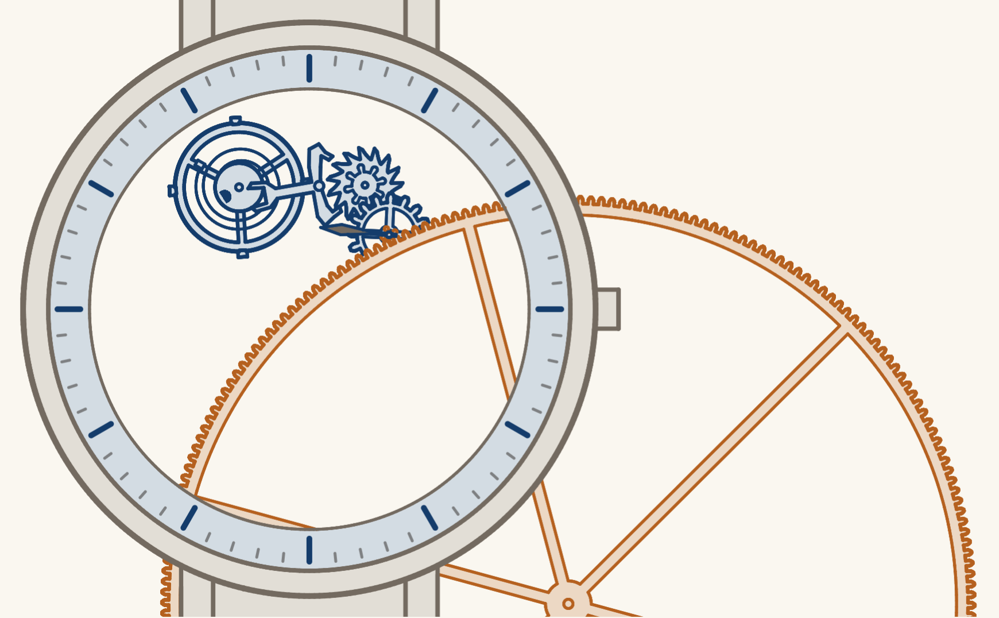
But there’s a limit to how small you can manufacture the small gear, so the big gear would be huge. And it would have a lot of teeth which adds to the cost. Plus, it would turn the wrong way, counterclockwise, because every gear turns the opposite direction from the one it meshes with.
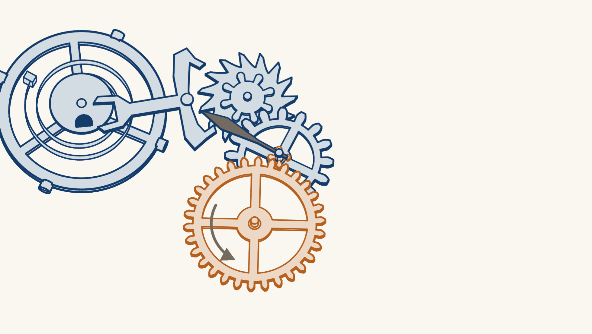
So the watch slows in two stages. The third wheel runs 7½ times slower, and the center wheel runs 8 times slower than that.
7½ times 8 is 60, so the center wheel turns once an hour.
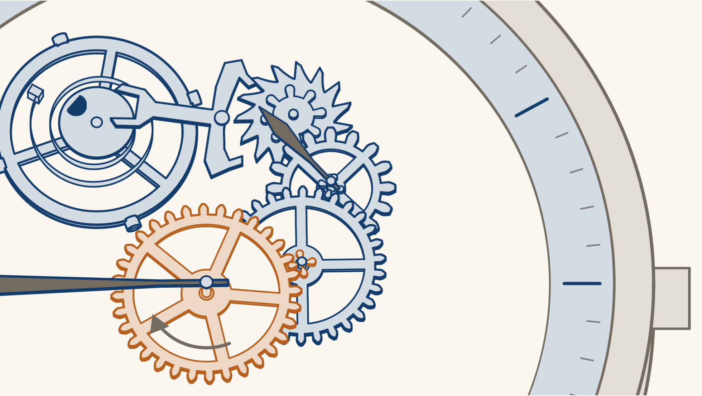
The minute hand goes on the center wheel’s axle (arbor), in the middle of the dial. It makes a full turn once an hour.
The center wheel pushes the third wheel which pushes the fourth wheel which pushes the escape wheel. Next up, the mechanism that pushes the center wheel and powers the whole watch.
Mainspring
c. 1430
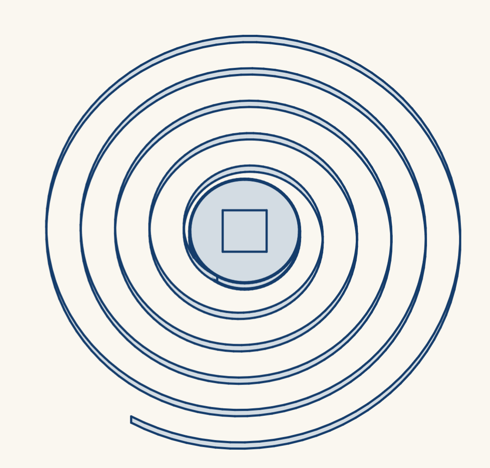
This is a spiral spring, like the hairspring. But instead of swinging back and forth, it does one slow unwind over a day or two. In the illustration above, it’s at rest.
Below, the outer end is held in place. Drag the slider to wind it up. The spring keeps its length, so its coils draw in toward the center.
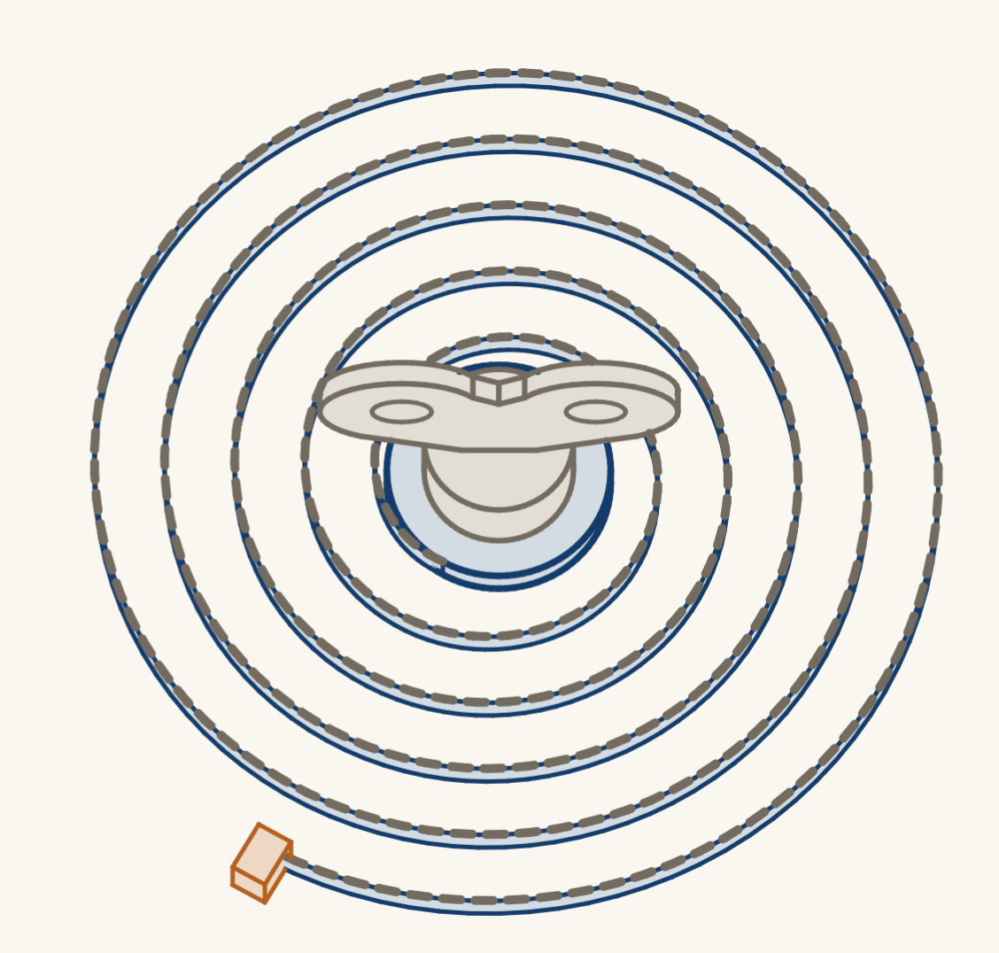
When wound away from its rest shape, the dashed line, it pushes back, as the hairspring does. A tiny one-way ratchet locks the axle (arbor) so it can only turn one way. To unwind the mainspring, let go of the outer end by pressing the button.
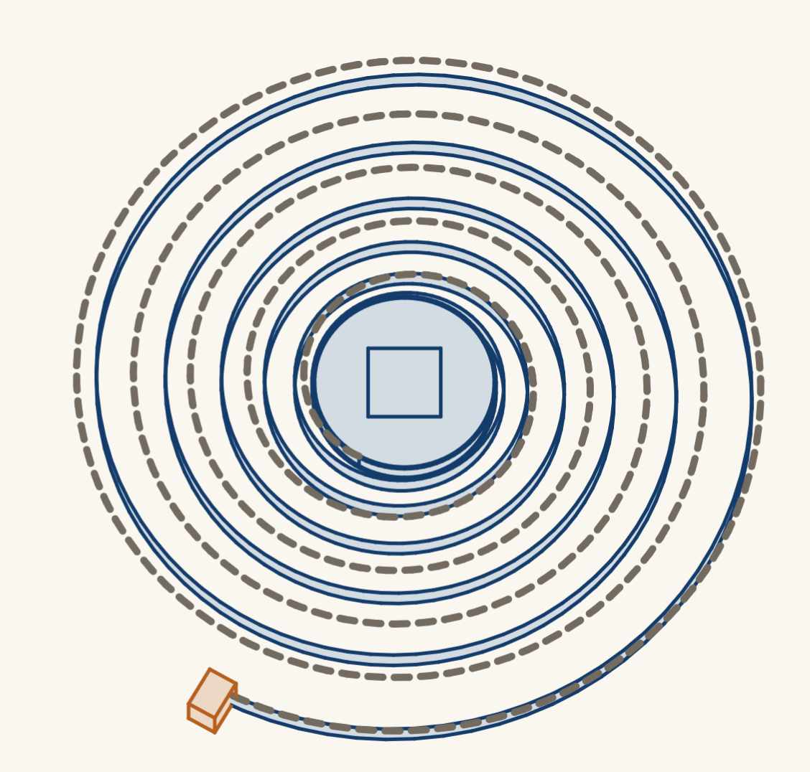
The block is gone, and the outer end swings around until the spring lies on its rest shape again. That fling is the energy that the winding put in.
A watch harnesses that force by attaching the spring’s outer end to a toothed drum called the barrel, invented by Jean-Antoine Lépine around 1760.
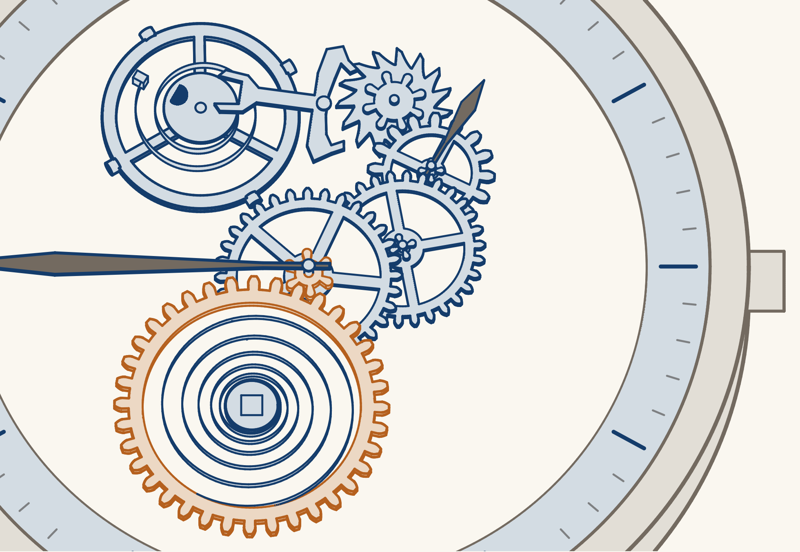
As the mainspring pushes the barrel, the barrel’s teeth drive the gear train we just built. This is the “hidden mechanism” we mentioned earlier.
Because the ratchet stops the arbor from turning backwards, the spring has only one way to unwind: by its outer end turning the barrel. Step the figure forward using the controls under it, and six hours pass in six seconds. The barrel turns once, the minute hand six times, and the coils move back out to the wall. When the spring is completely unwound, the watch stops.
Hour Hand
Hour hand: c. 1350
The hour hand must turn twice a day. That’s once every twelve hours. Unlike the 60:1, a 12:1 gear is doable.
But the hour hand on that wheel’s axle (arbor) is off center! And it would run backward (counterclockwise): a pair of meshing gears turn opposite directions.
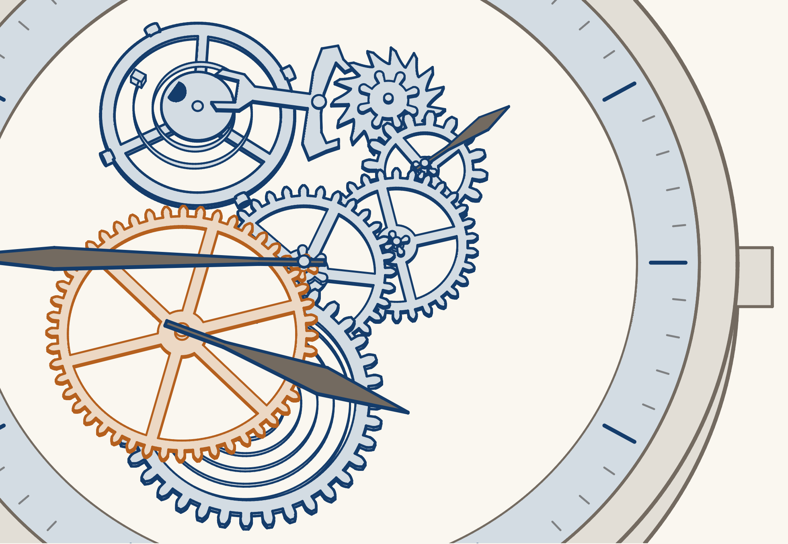
So we use the same two-step trick we used for the minute hand. This time, 3:1 going out and 4:1 coming back. 3:1 × 4:1 = 12:1.
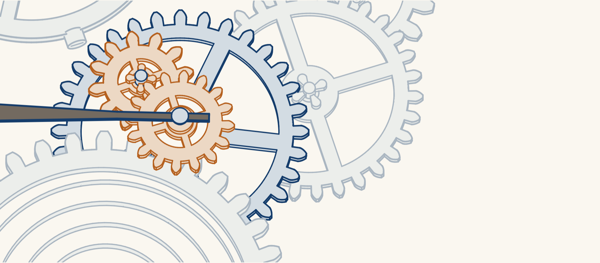
The hour hand goes on the hour wheel, in the middle, under the minute hand, attached to a hollow tube (pipe) that slips over the minute hand’s axle. It turns clockwise, twice a day.
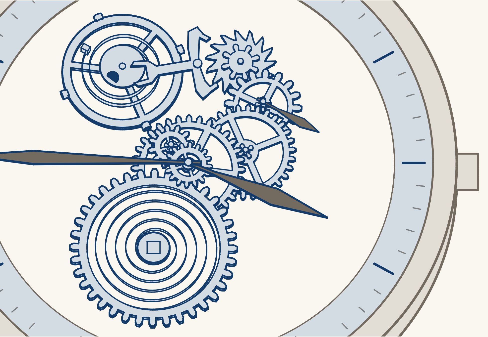
Recap
And that’s how a mechanical watch works!
Here’s a recap, retracing our steps in reverse, from the hour hand to the hairspring. The tour plays by itself, like a short film. The time scale in the corner says how much faster than real time each segment runs.
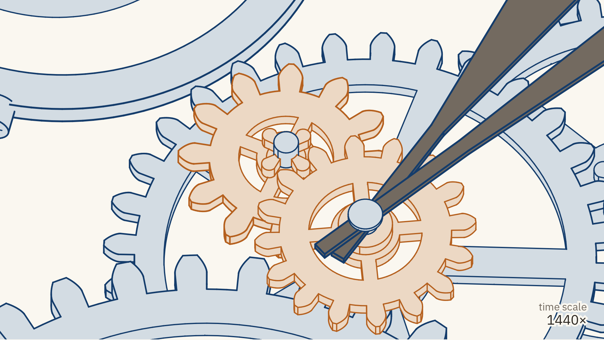
The hour hand is driven by a pair of gears totaling 12:1.